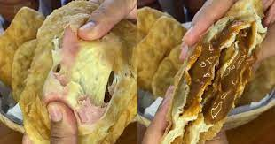

Alumnos:
- Rodriguez Emiliano5B
- Palma Agustin 5B
Proyectos
Tortafritas(chipas) Rellenas
Informacion
Tortafritas: Tortafritas o tambien llamado Chipa, son delicias tradicionales Argentinas, hechas con harina leudante, permite el relleno de estas con dulce de leche o mermelada
